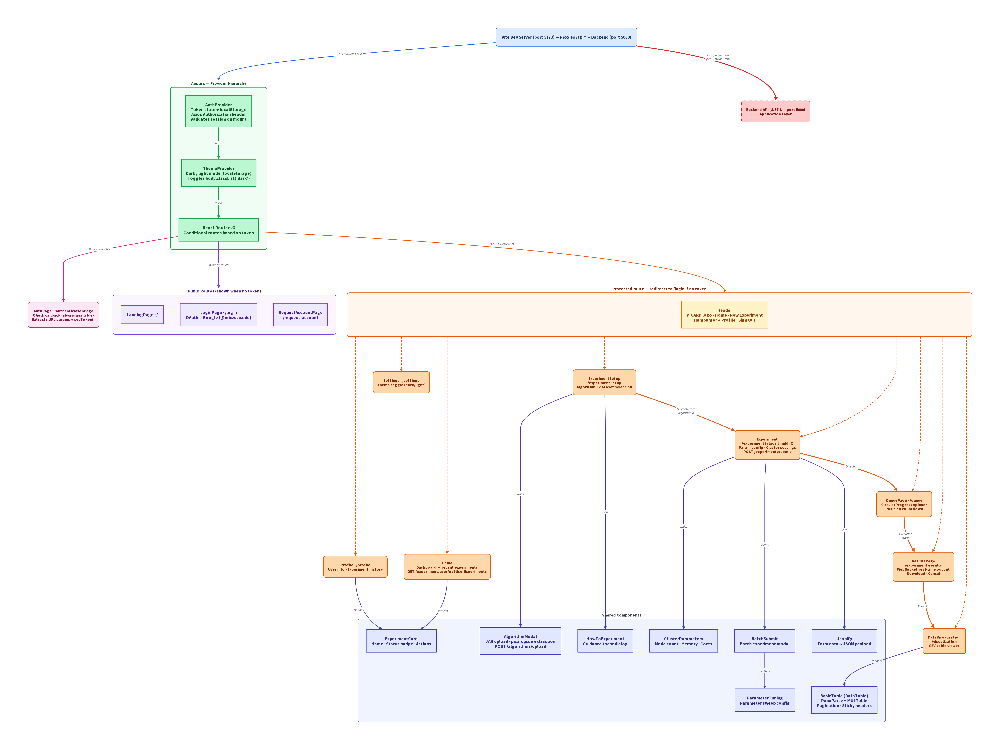

Diagram

docs/preslayer/presentation-layer.png.
Technology stack
| Technology | Role |
|---|---|
| Vite | Build tool and dev server on port 5173; proxies /api/* to localhost:5080 |
| React 18 | Core UI framework (component-based SPA) |
| React Router DOM v6 | Client-side routing — public and protected route trees |
| TailwindCSS | Primary utility-first CSS framework |
| MUI (Material UI) v6 | Component library — tables, circular progress, accordions, data grid |
| React Bootstrap | Modal dialogs (algorithm upload, batch submit) |
| Axios | HTTP client — global Authorization header set by AuthProvider |
| PapaParse | Client-side CSV parsing for data visualization |
| JSZip | ZIP extraction for algorithm JAR uploads (reads picard.json metadata) |
The frontend runs on port 5173 during development
and proxies all /api/* requests to the .NET backend on
port 5080. The Vite proxy strips the
/api prefix before forwarding. The API base URL is
configurable via the VITE_API_BASE environment variable
(defaults to /api).
Provider composition
The entire application is wrapped in three nested providers, defined
in App.jsx. Anything inside these providers can read
auth, theme, or routing state without prop-drilling.
| Provider | Source | Responsibility |
|---|---|---|
| AuthProvider | components/authprovider/authprovider.jsx |
Manages auth token in localStorage, sets Axios Authorization header globally, validates session against GET /Authentication/session on mount |
| ThemeProvider | context/themeContext.jsx |
Manages dark/light mode toggle, persists preference to localStorage, toggles document.body.classList("dark") |
| React Router | routes.jsx |
Route tree — splits into public (unauthenticated) and protected (authenticated) branches |
Public routes
These routes do not require an auth token.
| Page | Route | Description |
|---|---|---|
| LandingPage | / | ASCII art spaceship splash with a call-to-action link to login |
| LoginPage | /login | "Login with Mix Account" button — redirects to backend OAuth endpoint (/Authentication/login) |
| RequestAccountPage | /request-account | Email input form to request platform access |
| AuthPage | /authenticationPage | OAuth callback handler — parses URL params, calls setToken(), redirects to /home |
Protected routes
ProtectedRoute (components/protectedroute/protectedroute.jsx)
checks for a valid auth token and redirects to /login
if absent. All protected pages render inside this wrapper via
React Router's <Outlet>.
| Page | Route | Description |
|---|---|---|
| Home | /home | Dashboard — fetches user experiments via GET /api/experiment/user/getUserExperiments, displays the most recent ExperimentCard |
| ExperimentCreation | /experimentSetup | Algorithm and dataset selection with upload modals; navigates to parameter configuration |
| ExperimentSetup | /experiment?algorithmId=X | Parameter configuration (algorithm params + cluster settings), dataset assignment, single and batch experiment submission via POST /api/experiment/submit |
| QueuePage | /queue | Circular progress indicator with queue position that decrements every 10 seconds |
| ResultsPage | /experiment-results | Polls experiment status every 1 second; WebSocket real-time log streaming (ws://.../experiment/watch/{id}); download output files |
| DataVisualization | /visualization | CSV table viewer with PapaParse parsing, MUI Table with pagination and sticky headers |
| Profile | /profile | User info display, full experiment history with state filtering |
| Settings | /settings | Theme toggle (light/dark), Google account management link |
Shared components
| Component | Used By | Responsibility |
|---|---|---|
| Header | All protected pages | Navbar with PICARD branding, nav links, hamburger menu |
| ExperimentCard | Home, Profile | Experiment name, status badge (Queued / In Progress / Processing / Finished / Failed), action links |
| FileUploader | ExperimentCreation | Chunked file upload (1 MB chunks) for CSV datasets via POST /api/dataset/upload |
| AlgorithmModal | ExperimentCreation | Bootstrap modal for algorithm JAR upload — extracts picard.json from ZIP for parameter definitions |
| ClusterParameters | ExperimentSetup | Loads cluster configuration defaults from config.json; renders form fields for node count, memory, cores |
| CSVViewer | DataVisualization | PapaParse CSV parsing, MUI Table rendering with pagination and sticky headers |
| Parameter | ExperimentSetup | Labeled text input for individual algorithm parameters |
| HowToExperiment | ExperimentCreation | Toast popup with step-by-step experiment creation instructions |
| Jsonify | ExperimentSetup | Utility that constructs the backend-ready JSON payload from form data |
Authentication flow
The authentication flow uses Google OAuth 2.0, mediated entirely through the backend — the frontend never communicates directly with Google.
-
Login initiation.
LoginPageredirects the browser to the backend's/Authentication/loginendpoint. -
OAuth redirect.
The backend redirects to Google OAuth 2.0, restricted to the
@mix.wvu.edudomain. -
Callback.
Google redirects back to the frontend's
/authenticationPageroute with user details as URL parameters (userID,userEmail,firstName,lastName). -
Token persistence.
AuthPagecallsAuthProvider.setToken(), which stores user info inlocalStorageand sets the AxiosAuthorizationheader globally. -
Session validation.
On app mount,
AuthProvidercallsGET /Authentication/sessionto validate the stored token. Invalid tokens are cleared. -
Logout.
HeadertriggersGET /Authentication/logouton the backend, then clears the local token viaAuthProvider.
Experiment workflow (user perspective)
-
ExperimentCreation —
User selects an algorithm
(
GET /api/algorithms/algorithms) and a dataset (GET /api/dataset). New ones can be uploaded via modals. On "Proceed", the user is navigated to the configuration page with the selectedalgorithmId. -
ExperimentSetup —
Algorithm parameters are fetched via
GET /api/algorithms/algorithmParameters. The user configures algorithm params, cluster params (node count, driver/executor memory and cores), and assigns a dataset. Submit sends aPOST /api/experiment/submit. Batch submission allows multiple experiments with parameter sweeps. - QueuePage — Circular progress indicator with queue position. Position decrements every 10 seconds. When the experiment starts executing, the user is navigated to results.
-
ResultsPage —
Polls
GET /api/experiment/status/{id}every 1 second and holds open a WebSocket to/experiment/watch/{id}for real-time log streaming, rendered in a terminal-style display (green text on black). Once finished, a download button enables retrieval of output files. - DataVisualization — Displays experiment output as a paginated CSV table using PapaParse for parsing and MUI Table for rendering.
External services
| Service | Role | Communication |
|---|---|---|
| Backend API (port 5080) | .NET 8 REST API — data persistence, experiment execution, authentication | All requests proxied through Vite (/api/* → localhost:5080) |
| Google OAuth 2.0 | Authentication provider | Indirect — login redirect handled entirely by the backend |
| localStorage | Browser-local persistence | Auth token (userID, userEmail, firstName, lastName) and theme preference |